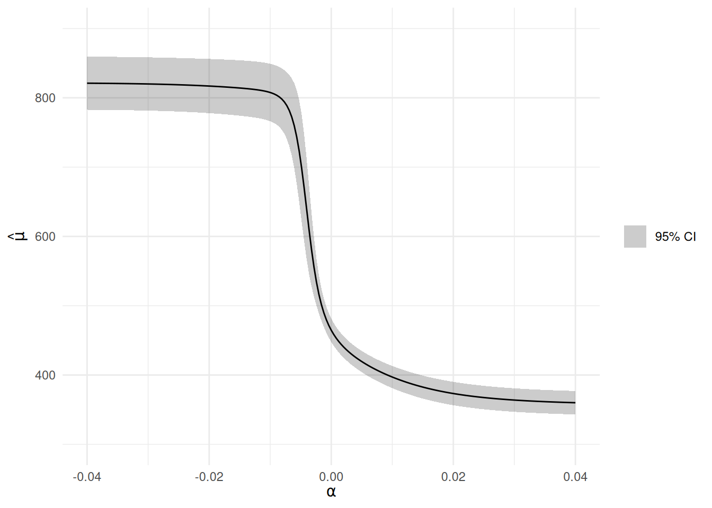

Note
This article is translated from the Cole et al. (2023): Sensitivity Analysis for Missing Data example in the documentation of delicatessen, deli’s Python counterpart.
Cole et al. (2023) reviewed a sensitivity analysis method for missing data proposed in Robins et al. (2000). This example was illustrated using simulated missing data on CD4 T cell counts among persons with HIV (an immune marker for disease progression). In the paper, the estimator and corresponding estimating functions are reviewed.
Here, we replicate this example using deli.
Load Data
d <- lau_wihs
d$cd41 <- as.numeric(d$cd41)
d$cd42 <- as.numeric(d$cd42)
d$cd43 <- as.numeric(d$cd43)
d$cd44 <- as.numeric(d$cd44)Note that the last 3 columns are all variations on the extent of the missing data.
Complete-Case Analysis
As a starting point, consider a complete-case analysis for the second missing data scenario.
# Define the complete-case mean estimating equation
psi_mean <- function(theta) {
# Replace NA with arbitrary value; zeroed out by r anyway
y_filled <- ifelse(is.na(y), -999, y)
# Complete-case mean EE
matrix(r * (y_filled - theta), nrow = 1)
}
estr <- m_estimate(stacked_equations = psi_mean, init = c(300))
c(mu = coef(estr)[[1]], confint(estr)[1, ])
#> mu lower upper
#> 464.6481 447.6731 481.6232However, this complete-case analysis assumes missing data is non-informative (or “missing completely at random”). We might be suspicious that this is the case. This is where the sensitivity analysis comes in.
Sensitivity Analysis
This approach is based on the following expression: \mu = E \left[ \frac{R_i Y_i}{H[\beta + q(Y; \alpha)]} \right] where Y is CD4, R indicates whether Y was observed, H is a user-specified monotonic increasing function with outputs bounded between zero and one, and q is a user-specified bias function (that can depend on Y itself). Here, \alpha is not estimable (the problem of an unknown missing data mechanism). However, we can plug-in different values for \alpha and see how that changes our results. Further, we might even have a best guess at a range for \alpha. Here, \beta is a bounding parameter that we will estimate.
For the following example, H is specified to be the logistic function. We will also use the following q(Y; \alpha) function: q(Y; \alpha) = \alpha Y
By-hand estimating equations
First, we define the bias function q and the sensitivity analysis estimating equations by hand.
psi_sens <- function(theta) {
mu_y <- theta[1]
beta <- theta[2]
# Solving for the sensitivity analysis mean
numerator <- r * y # Numerator
denominator <- inverse_logit(beta + qy) # Denominator
ratio <- numerator / denominator # Ratio
ratio <- ifelse(is.na(ratio), 0, ratio) # Set missing to zero
mean_ee <- matrix(ratio - mu_y, nrow = 1) # Mean EE
# Solving for intercept of model
h_params <- matrix(r / inverse_logit(beta + qy) - 1, # Bounding parameter EE
nrow = 1)
# Returning stacked estimating equations
rbind(mean_ee, h_params)
}
# Set alpha and compute q
alpha <- 0.01
qy <- q_function(y_vals = y, alpha = alpha)
# Estimate
estr <- m_estimate(stacked_equations = psi_sens, init = c(300, 0))
c(mu = coef(estr)[[1]], confint(estr)[1, ])
#> mu lower upper
#> 397.0732 381.0838 413.0626This is notably lower than the complete-case analysis.
Using the built-in function
We can also implement this approach using the built-in ee_mean_sensitivity_analysis function.
alpha <- 0.01
qy <- q_function(y_vals = y, alpha = alpha)
psi_robins <- function(theta) {
ee_mean_sensitivity_analysis(
theta = theta,
y = y,
delta = r,
X = 1,
q_eval = qy,
H_function = inverse_logit
)
}
estr <- m_estimate(stacked_equations = psi_robins, init = c(300, 0))
c(mu = coef(estr)[[1]], confint(estr)[1, ])
#> mu lower upper
#> 397.0732 381.0838 413.0626This gives the same result as the by-hand version, as expected.
Grid of alpha values
The prior results are only for a single value of \alpha. There is no strong reason to believe that the true \alpha is actually 0.01. Instead, we should look over a range of values for \alpha. This is also where M-estimation shines: without it, we would need to bootstrap to appropriately estimate the variance, which can be computationally intensive when exploring a large grid of values.
The following code explores the sensitivity analysis over a grid of values for \alpha and then plots them. Note that we start at \alpha := 0 and build outward, using the previous solution as the initial values for the next iteration.
alpha_l <- seq(0.0, -0.04, length.out = 100)
alpha_u <- seq(0.0, 0.04, length.out = 100)
point <- c()
lcl <- c()
ucl <- c()
for (alphas in list(alpha_l, alpha_u)) {
init_vals <- c(400, 0)
for (alpha in alphas) {
# Updating q-function values
qy <- q_function(y_vals = y, alpha = alpha)
# Applying M-estimator
estr <- m_estimate(stacked_equations = psi_robins, init = init_vals)
ci <- confint(estr)
# Extracting output
point <- c(point, estr@theta[1])
lcl <- c(lcl, ci[1, 1])
ucl <- c(ucl, ci[1, 2])
# Update init to speed up root-finding in next iteration
init_vals <- estr@theta
}
}
# Combine and sort
p <- data.frame(
alpha = c(alpha_l, alpha_u),
point = point,
lcl = lcl,
ucl = ucl
)
p <- p[order(p$alpha), ]
ggplot(p, aes(x = alpha, y = point)) +
geom_ribbon(aes(ymin = lcl, ymax = ucl, fill = "95% CI"), alpha = 0.2) +
geom_line() +
scale_fill_manual(values = c("95% CI" = "black")) +
coord_cartesian(ylim = c(300, 900)) +
labs(x = expression(alpha), y = expression(hat(mu)), fill = NULL)
Estimating \mu across this grid of \alpha takes a few seconds at most. This is dramatically faster than bootstrapping. This again highlights the power of M-estimation and the sandwich variance.
As we can see in the plot, the parameters asymptote at certain values. This is indeed the case: this sensitivity analysis returns the nonparametric bounds in the limit.
Bounds
For the mean of a continuous variable, the bounds make the extreme assumption that everyone has the highest (lowest) observed Y value to compute the upper (lower) bound on \mu. This is relatively easy to program by adapting the complete-case analysis code.
psi_bounds <- function(theta) {
# Lower bound: replace missing with observed minimum
ee_lower <- matrix(
ifelse(is.na(y), min(y, na.rm = TRUE), y) - theta[1],
nrow = 1
)
# Upper bound: replace missing with observed maximum
ee_upper <- matrix(
ifelse(is.na(y), max(y, na.rm = TRUE), y) - theta[2],
nrow = 1
)
rbind(ee_lower, ee_upper)
}
estr <- m_estimate(stacked_equations = psi_bounds, init = c(400, 700))
ci <- confint(estr)
# Bounds, with the interval running from the lower limit of the lower bound
# to the upper limit of the upper bound
c(
lower_bound = coef(estr)[[1]],
upper_bound = coef(estr)[[2]],
lower = ci[1, 1],
upper = ci[2, 2]
)
#> lower_bound upper_bound lower upper
#> 354.3540 821.6443 337.3231 860.0420These are the nonparametric bounds for missingness of the mean. Note that these bounds assume the maximum possible value of Y for the missing observations is the maximum in the observed data. We can avoid this assumption by replacing the maximum (minimum) with larger (smaller) values if we are concerned.
This example shows how deli can be used for sensitivity analyses. It also highlights the advantage of the sandwich variance for computational purposes, allowing us to explore a range of sensitivity analyses while remaining computationally quick.
References
Cole, S. R., Zivich, P. N., Edwards, J. K., Shook-Sa, B. E., & Hudgens, M. G. (2023). Sensitivity analyses for means or proportions with missing outcome data. Epidemiology, 34(5), 645-651.
Robins, J. M., Rotnitzky, A., & Scharfstein, D. O. (2000). Sensitivity analysis for selection bias and unmeasured confounding in missing data and causal inference models. In Statistical models in epidemiology, the environment, and clinical trials (pp. 1-94). New York, NY: Springer New York.